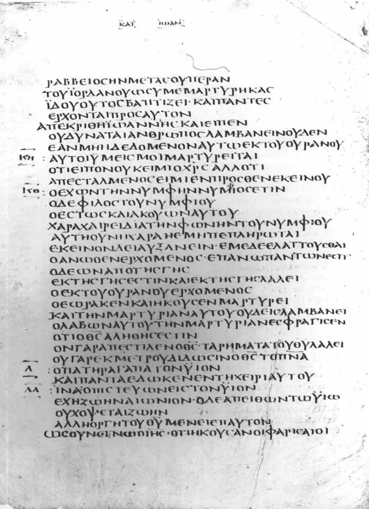
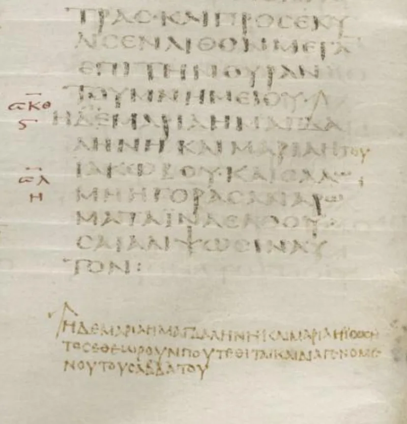

The risen Jesus quotes a disputed end of Mark
ContestedLDS scholars have a real answer here. Say so before your friend does.
The passage
Mormon 9:22-24 has the risen Jesus commissioning the Nephite disciples. The words are nearly identical to Mark 16:15-18 in the King James.
Ether 4:18 uses the same material.
Why that is a problem
Mark 16:9-20 is called the long ending. It is missing from the earliest Greek manuscripts, including Sinaiticus and Vaticanus.
Most textual scholars judge it a second-century addition.
Their answer, at full strength
Book of Mormon Central's KnoWhy 522 gives two lines. First, a minority of credentialed scholars outside the church defend the long ending as authentic — Nicholas Lunn and James Snapp, on patristic and internal grounds.
Second, even if it is a later addition, Moroni was quoting the Nephite record. The risen Lord could give the same commission in both hemispheres.
How strong is this argument?
Genuinely arguable, and the second answer is hard to disprove. Lunn and Snapp are real scholars with published defences.
But they are a minority. On the majority view the problem stands.
What to say
"Do you know the story behind the last twelve verses of Mark?"



How they answer this — at its strongest
Some non-LDS scholars defend Mark's long ending, and the risen Lord could commission twice.
Book of Mormon Central answers in KnoWhy 522, and gives two lines.
First, a minority of trained scholars outside the church defend the long ending as real. Nicholas Lunn and James Snapp argue that case from early church quotations and from the text itself.
Second, even if Mark 16:9-20 is a later addition, Moroni's source was the Nephite record of Christ's words. The King James phrasing is the register of the translation. The risen Lord could give the same charge in both hemispheres.
The verdict
Your case holds on the standard view, but their minority answer for Mark is real.
The defence leans on a minority reading of the text. That reading does have published defenders outside the church. So whether Mark's long ending is original is genuinely disputed.
On the standard view, though, the problem stands. The risen Jesus in America quotes twelve verses that most scholars date to the second century.
Sources
- Grant H. Palmer, An Insider's View of Mormon Origins, ch. 3
- LDS Discussions, 'The Long Ending of Mark and the Book of Mormon'